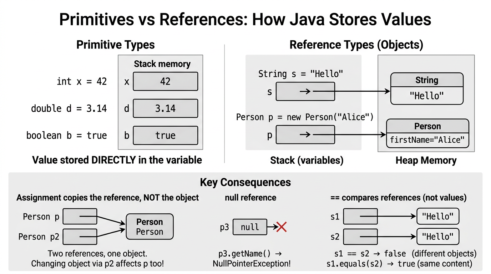

Classes, Objects & References — COMP0004¶
Lecture-style notes aligned with Slides 5. This is the conceptual core of object-oriented programming in Java: blueprints (classes), instances (objects), and handles (references).
1. COMPLETE TOPIC SUMMARIES¶
Classes vs objects¶
- A class is a template that defines structure (what data an instance carries) and behaviour (what operations are possible) for its instances.
- An object is a runtime instance of a class — concrete state in memory, created typically with
newand a constructor.
Analogy: the class
SimpleBookis the idea “book”; eachnew SimpleBook(...)is an actual book on the shelf.
Class structure: instance variables, instance methods, constructors¶
- Instance variables (fields) hold per-object state (each object has its own copies).
- Instance methods implement behaviour; they can read/update that object’s fields (subject to visibility).
- Constructors run at object creation to establish a valid initial state.
Example — SimpleBook:
public class SimpleBook {
private String title;
private String author;
public SimpleBook(String title, String author) {
this.title = title;
this.author = author;
}
@Override
public String toString() {
return title + " by " + author;
}
}
this.titledisambiguates the field from the parameter namedtitle.toString()is inherited fromObject; overriding it gives a readable representation for printing/logging.
Abstraction in OO¶
Abstraction means presenting a selective, simplified view of a concept — hiding irrelevant detail so we can reason at the right level.
- Classes encode abstractions: a
BankAccountin software is not a physical vault; it is a model capturing just the data and rules we need. - Good abstractions have clear boundaries: what clients can do (public methods) vs how it is done internally.
Class roles in modelling¶
- Representation — model entities in the domain (student, ticket, sensor reading).
- Relationships — express associations between entities (a
Moduleoffered by aDepartment). - Partitioning — break a system into components with responsibilities (UI vs model vs persistence).
These roles guide where to put fields/methods and how to name types.
UML (Unified Modeling Language)¶
UML is the de facto standard notation for OO design. In introductory courses you mostly meet:
- Class diagrams — types, fields, methods, relationships (associations, sometimes multiplicities).
- Object diagrams — snapshots of instances and links between them at a moment in time.
Class icon (three compartments):
- Name (class name, often bold on paper)
- Attributes (fields)
- Operations (methods)
Visibility adornments:
+public — visible to clients outside the class.-private — visible only inside the class.
Example (UML-style sketch):
---------------------------------
| SimpleBook |
---------------------------------
| - title : String |
| - author : String |
---------------------------------
| + SimpleBook(title, author) |
| + toString() : String |
---------------------------------
Mermaid as an alternative notation¶
In Markdown tools (and some slides), Mermaid can render diagrams from text:
classDiagram
class SimpleBook {
-String title
-String author
+SimpleBook(String title, String author)
+toString() String
}
Object diagrams in Mermaid are less universally used than class diagrams, but the idea is the same: show instances (book1 : SimpleBook) and field values.
Encapsulation and information hiding¶
Encapsulation bundles state + behaviour behind a controlled surface:
- Make fields
privateso external code cannot arbitrarily break invariants. - Expose a minimal useful
publicAPI (constructors, getters/setters where appropriate, behaviour methods).
Information hiding means clients depend on what the object promises, not how it stores data internally — freeing you to change representation later.
Object references — variables hold handles, not embedded objects¶
For a class type Person, a variable like Person p; does not contain a whole person “inline”. It holds a reference (think: address/link) to a Person object on the heap (after new).

{kind=link}
- Multiple variables can reference the same object:
SimpleBook a = new SimpleBook("OOP", "Alex");
SimpleBook b = a; // b references the SAME object as a
Mutating through a affects what you see via b.
null references and NullPointerException¶
null is a special reference meaning “points to no object.”
- You may assign
nullto a reference variable. - Dereferencing
null— field access, method call, array length — throwsNullPointerException:
Defensive code tests if (s != null) or uses APIs designed to avoid null (later: Optional, validation).
Call-by-value in Java¶
Java is always call-by-value:
- For primitives, the value (bits of the int, double, etc.) is copied into the parameter.
- For objects, the reference value (the link/handle) is copied — not a deep copy of the object.
So the callee receives its own parameter variable, but for reference types it often aliases the same object as the caller.
Return-by-value¶
Method return uses the same rule: a copy is returned.
- Returning a reference type returns a copy of the reference, which still points at the same object.
- Returning
intreturns a copy of the int value.
Reference parameters — mutate vs reassign¶
static void tryReassign(SimpleBook x) {
x = new SimpleBook("Other", "Author"); // only local x changes
}
static void renameFirst(SimpleBook x) {
// assuming a setter exists:
// x.setTitle("New Title"); // would mutate shared object — affects caller
}
- Reassigning the parameter
xinside the method does not change the caller's variable — only the copy of the reference was updated. - Mutating the object through the reference (calling methods that change fields) does affect the caller, because both refer to the same object.
Primitives vs reference parameter passing¶
| Actual argument type | What gets copied | callee can affect caller how? |
|---|---|---|
int, double, ... |
the primitive value | Cannot change caller’s variable; only returns or side channels |
Person, int[], ... |
the reference value | Can mutate object state via that reference; cannot replace caller’s binding |
Object lifetime vs variable scope¶
- A local variable disappears when its block ends (scope).
- The object may still exist if other references still point to it.
SimpleBook b;
{
SimpleBook tmp = new SimpleBook("A", "B");
b = tmp;
} // tmp is out of scope, but the object is still reachable via b
Garbage collection reclaims objects that are no longer reachable. Scope ≠ lifetime.
Declaring a class declares a new type¶
Writing class Person { ... } introduces a user-defined type Person. You can use Person in signatures, generics (later), and variable declarations — it becomes part of your program’s static type system**.
2. EXAM-STYLE QUESTIONS (3–5 with model answers)¶
Q1 — Class vs object¶
Question: Distinguish class and object in Java. Give a one-sentence role for each in program execution.
Model answer: A class is a static definition (the blueprint) describing fields and methods; an object is a runtime instance allocated on the heap with its own field values. The JVM loads classes once (per loader); the program manipulates objects created with new as data in motion.
Q2 — Encapsulation¶
Question: What is encapsulation? Why are private fields paired with a small public API considered good practice?
Model answer: Encapsulation bundles state and behaviour and controls access so invariants (rules that must always hold) are easier to maintain. private fields hide representation details; a minimal public API exposes only intentional operations, reducing coupling and allowing internal changes without breaking clients — this is information hiding.
Q3 — References and aliasing¶
Question: After:
how many SimpleBook objects exist? If a method mutates y’s fields (assume setters), does x reflect the change? Why?
Model answer: One object. y holds a copy of the reference that aliases x. Mutating the shared object through either variable changes the same instance, so x reflects updates made via y.
Q4 — Call-by-value “paradox”¶
Question: Java is call-by-value. Explain why the following prints 42:
static void setZero(int n) {
n = 0;
}
public static void main(String[] args) {
int x = 42;
setZero(x);
System.out.println(x);
}
Contrast with passing an int[] and assigning arr[0] = 0 inside a method — what prints and why?
Model answer: For int x, setZero receives a copy of 42; assigning n = 0 only changes the parameter copy, not x, so x remains 42. For int[] arr, the parameter is a copy of the reference; arr[0] = 0 mutates the shared array object, so the caller sees 0 at index 0 — call-by-value applied to the reference, not to a deep copy of the array.
Q5 — UML literacy¶
Question: In a UML class diagram, what do + and - mean? Name the three compartments of a standard class icon.
Model answer: + denotes public visibility; - denotes private visibility. The three compartments are class name, attributes (fields), and operations (methods).
3. MUST-KNOW KEY POINTS¶
- Class = blueprint; object = instance at runtime (
new). - Structure: instance fields, instance methods, constructors; use
thisto resolve shadowing. - Abstraction simplifies reality into a manageable model.
- Classes play roles: representation, relationships, partitioning.
- UML: class vs object diagrams;
+/-visibility; three compartments. - Encapsulation:
privatestate, minimalpublicsurface — information hiding. - Variables store references for class types;
nullmeans no object;NullPointerExceptionon bad dereference. - Call-by-value copies primitive values or reference values; method reassignment of the parameter does not rebind caller vars; shared mutation is possible through references.
- Lifetime is reachability, not just scope;
Personas a class introduces a new named type.
4. HIGH-PRIORITY TOPICS¶
| Priority | Topic | Why it matters |
|---|---|---|
| 🔴 Must know | Class vs object | Foundational definitions for all later OO. |
| 🔴 Must know | Encapsulation + private fields |
Central design principle examined in coursework. |
| 🔴 Must know | References, aliasing, null |
Explains identity, bugs, and debugger traces. |
| 🔴 Must know | Call-by-value for primitives vs references | Classic exam explanation question. |
| 🟡 Important | SimpleBook-style example (constructor, toString) |
Template for “write a small class” tasks. |
| 🟡 Important | UML class diagram basics (+/-, compartments) |
Design literacy; short-answer friendly. |
| 🟡 Important | Abstraction and class roles | Essay-style “why OO?” answers. |
| 🟢 Useful | Mermaid diagrams | Handy for notes/repos; may appear as optional tooling. |
| 🟢 Useful | Object lifetime vs scope | Deeper runtime story; links to GC. |
| 🟢 Useful | User-defined types | Connects Java types to static typing mindset. |
5. TOPIC INTERCONNECTIONS & BIGGER PICTURE¶
- Arrays & objects: arrays are objects too — the same reference rules apply (
null, aliasing, mutation). - API design: encapsulation foreshadows interfaces, packages, and testing (public contracts vs internal refactor freedom).
- Inheritance & polymorphism (later):
extends,@Override, dynamic dispatch build on classes + references. - Collections:
ArrayList<E>stores references toEinstances — identity and mutation matter when sharing elements. - Software engineering: UML (or similar) supports communication about structure; code remains the source of truth, diagrams are views.
6. EXAM STRATEGY TIPS¶
- Define terms in one line before longer explanations (class, object, reference, encapsulation).
- Draw tiny diagrams for reference questions: boxes (objects), arrows (variables),
nullas “no arrow.” - Call-by-value script: always say what is copied (bits of int vs reference value), then mutate vs reassign separately.
- UML answers: mention three compartments and visibility explicitly — easy marks if the rubric lists notation.
- Code skeletons: practise
privatefields, constructor,toString()until muscle memory — common “warm-up” question. - Contrast
==on references (identity) vs.equalson meaningful equality (when taught) — examiners like precision.
End of notes — Classes, Objects & References (COMP0004, Slides 5).